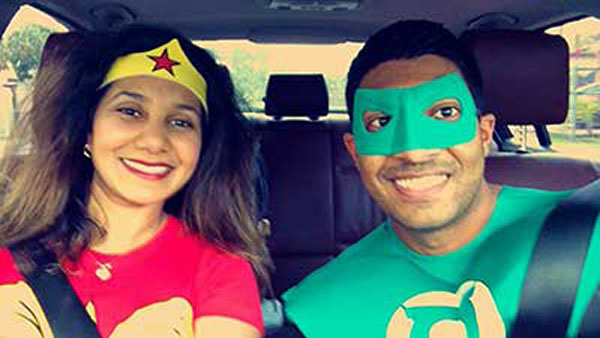

Tell Us A Story
Our name, "Cuentame," comes from the Spanish "tell me". Stories make us human. We use them to distinguish ourselves as individuals, navigate our world, and bind our communities. Personal narratives help us understand how the ramifications of gender, race, globalization and class start locally.
Cuentame focuses on recorded and oral histories. The project is inspired in part by National Public Radio program, StoryCorps, but narrows it's scope to stories in Miami and South Florida. We also hope that the stories recorded through Cuentame can help our communities find authority in our voices and experiences.
Listen to our first story
Outted: A Siblings' Story
the Green Lantern for Halloween 2014
The only thing that separated Shahida and Tariq for years was the difference in their ages. Shahida's friends knew in her high school years that her little brother would tag along. Tariq knew that when Shahida got married, he'd have to bring over his playstation to her place after school.
An obstacle threatened their relationship as family and a friends. Neither expected it.